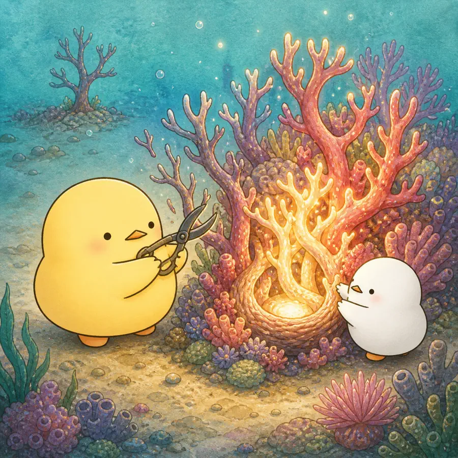
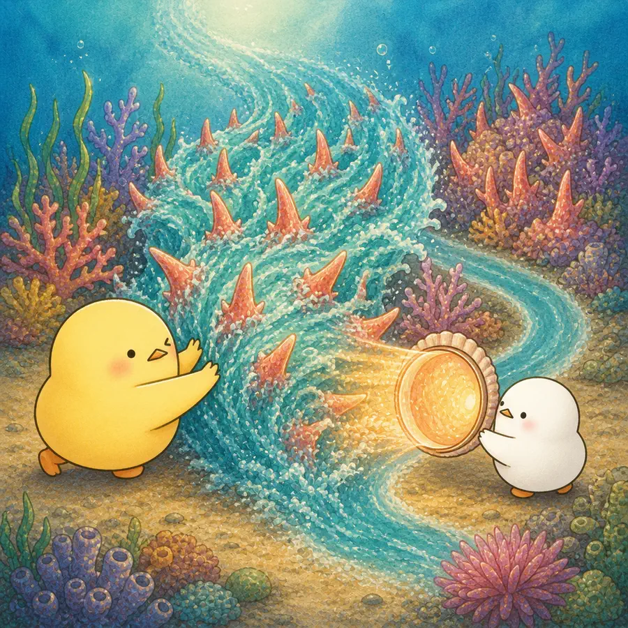
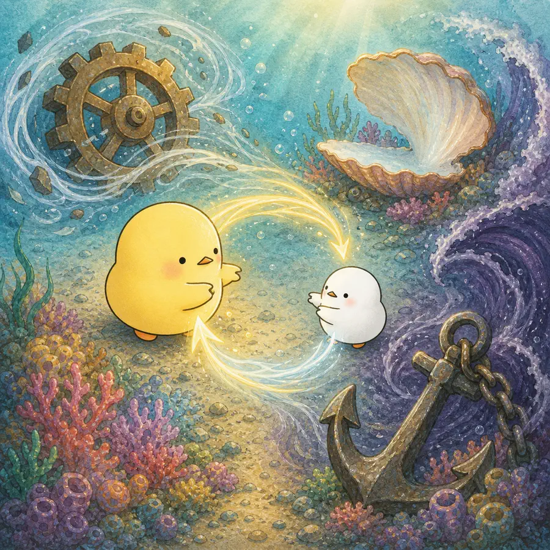
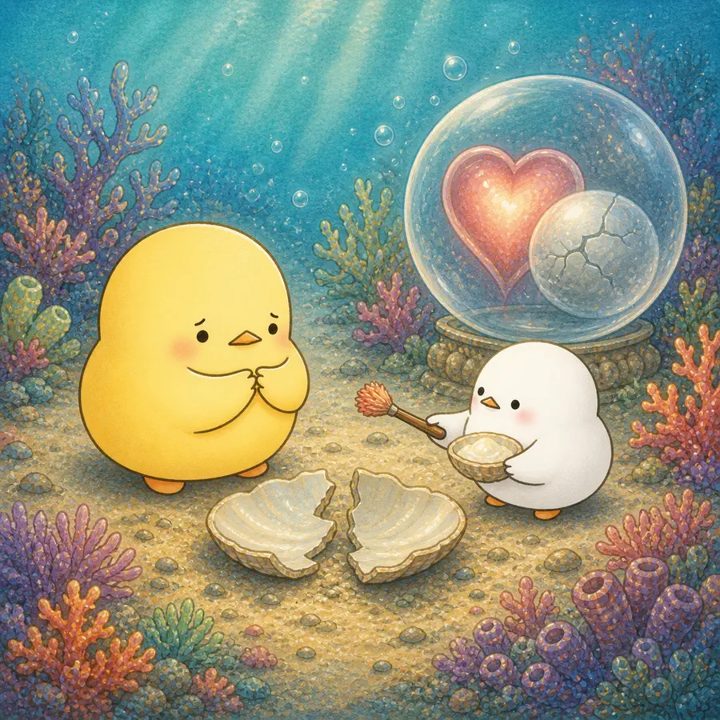

ILLUSTRATED OVERVIEW
4컷으로 읽는 나이 들수록 나아지는 관계
노년기 관계의 긍정성이 개인의 선택만이 아니라 환경 변화와 상대의 반응까지 얽힌 결과임을 살펴봅니다.
옆으로 넘겨 4컷 보기
-

노년기 연결망은 작아져도 가까운 관계의 비중과 관계 만족은 높을 수 있다.
-

긍정적 평가·사회적 전문성·갈등 회피는 노년기 관계의 부정성을 낮출 수 있다.
-

관계 긍정성은 개인의 동기, 사회환경 변화, 상대의 반응이 함께 만드는 과정이다.
-

노년층에 대한 우대는 애정·제한된 관계시간뿐 아니라 부정적 고정관념에서도 나올 수 있다.